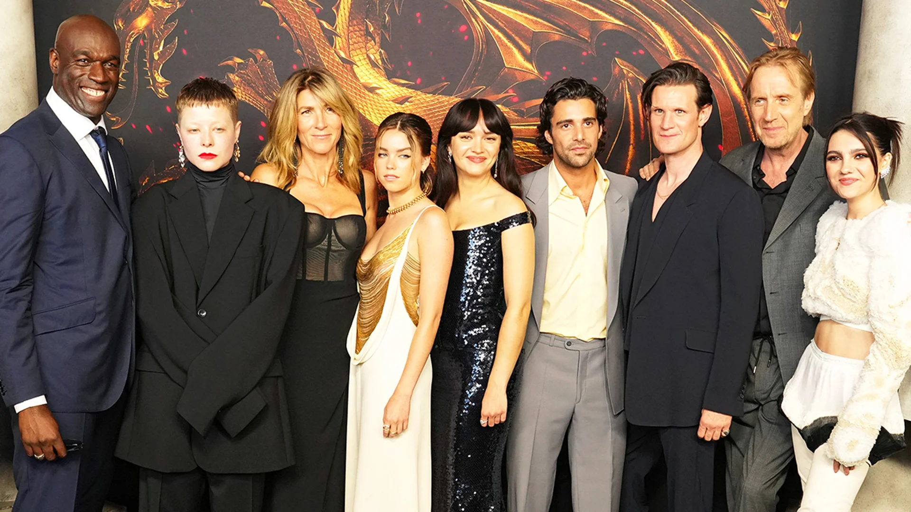
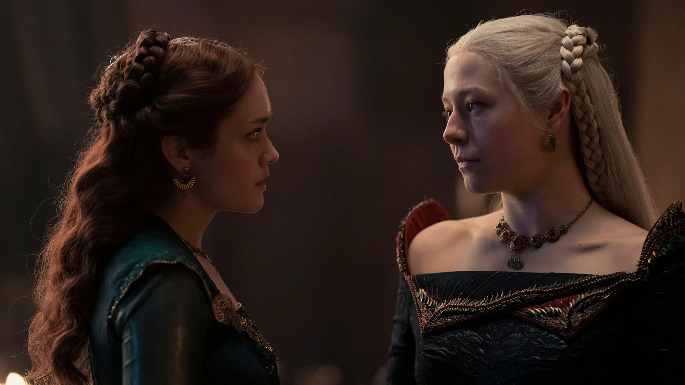

Kuća zmaja (engl. House of the Dragon) američka je fantastično-dramska televizijska serija koju su stvorili Rajan Kondal i Đorđ R. R. Martin za HBO. Prednastavak je serije Igra prestola (2011-2019) i druga serija u franšizi Pesma leda i vatre. Showrunneri prve sezone serije su Kondal i Miguel Sapojnik. Temeljena na Martinovom romanu Vatra i krv iz 2018. godine, serija je smještena oko 100 godina nakon ujedinjenja Sedam kraljevstava, skoro 200 godina prije događaja iz Igre prestola i 172 godine prije rođenja Deniris Targarjen. Sa ansamblskom podjelom uloga, serija bilježi događaje koji su doveli do početka kraja dinastije Targarjen, razarajućeg građanskog rata, poznatog kao "Ples zmajeva".
"Kuća zmaja" ("House of the Dragon") je serija koja se temelji na romanima "Pjesma leda i vatre" ("A Song of Ice and Fire") Georgea R. R. Martina i predstavlja prequel seriju "Igre prijestolja" ("Game of Thrones"). Neki od glumaca u seriji "Kuća zmaja" uključuju: Emma D'Arcy kao princeza Rhaenyra Targaryen, Matt Smith kao princ Daemon Targaryen, Steve Toussaint kao lord Corlys Velaryon, Olivia Cooke kao Alicent Hightower, Rhys Ifans kao Otto Hightower, Sonoya Mizuno kao Mysaria, Fabien Frankel kao Ser Criston Cole, Paddy Considine kao kralj Viserys Targaryen, Ovo je samo nekoliko glavnih glumaca u seriji, a tu su i brojni drugi glumci koji su imali manje uloge ili uloge u pojedinačnim epizodama.
Serija "Kuća zmaja" je prequel serija "Igre prijestolja" i priča se odvija u fiktivnom svijetu Westerosu, nekoliko stotina godina prije događaja iz "Igre prijestolja". Radnja serije se usredotočuje na Targaryene, vladarsku dinastiju koja je nekada vladala Westerosom prije nego što su srušeni. Priča započinje sa smrću kralja Viserysa Targaryena, nakon čega se pojavljuju dva pretendenta za prijestolje - njegova kćer Rhaenyra Targaryen i njegova nećakinja Alicent Hightower. Dok Rhaenyra ima pravo na prijestolje, Alicent i njen otac, Vrhovni čuvar Kraljevskog vijeća, Otto Hightower, smatraju da bi njen sin, princ Aegon Targaryen, trebao postati kralj. Sukob između dvije strane počinje da raste i započinju bitke za kontrolu nad kraljevstvom. Međutim, u sjeni sukoba, priča se također fokusira na pustolovine Corlysa Velaryona, poznatog kao "Morember", koji je veliki pomorski trgovac i vitez koji istražuje daleke krajeve svijeta sa svojim brodovima. Također se prati i život Daemon Targaryena, brata kralja Viserysa i nećaka Vrhovnog čuvara Hightowera, koji ima svoje planove za prijestolje. U ovoj epskoj borbi za vlast, čast i moć, svi likovi se bore za svoje interese i prave saveze, a kraljevstvo Westerosa visi u ravnoteži. Serija "Kuća zmaja" donosi spektakularnu produkciju, složene likove, drame i intrige, kao i spektakularne vizualne efekte koji donose ovaj svijet života.
Radnja Kuće zmaja se odvija 100 godina nakon Egonovog osvajačkog pohoda na Vesteros, odnosno 200 godina pre dešavanja u originalnoj seriji. Nova serija počinje savetom u Harenholu, na kom se odlučivalo ko će naslediti kralja Džeherisa. Uprkos tome što je Renis ćerka kraljevog prvorođenog sina, među vlastelom je vladalo snažno uverenje da žena ne treba da bude na čelu kraljevstva, pa je kruna dodeljena Vizerisu, sinu kraljevog drugorođenog sina. Početak je jasno stavio do znanja da će ova odluka, kao i ubeđenja koja vladaju, biti motiv koji će se prožimati kroz celu prvu sezonu, a posebno će doći do izražaja kada Vizeris imenuje svoju ćerku Reniru za naslednicu trona, na nezadovoljstvo mnogih. Iako se serija najviše fokusira na Reniru, koju smo u nekim momentima voleli, a u nekim mrzeli, zaista se divimo kako su tvorci učinili da razumemo obe strane i shvatimo njihovu motivaciju i ambicije. Od prvog do poslednjeg momenta, igra prestola nije prestajala. Naravno, tu su i zmajevi, ali nam je bilo posebno drago što nisu previše isticani u prvoj sezoni, već se priča najviše oslanjala na same likove, na spletke, svađe i tenziju, kao i na razne kalkulacije i posledice koje svaki povučen potez može da donese.
Prva sezona je dobila veoma pozitivne kritike, uz pohvale za razvoj likova, scenarij, muziku i glumce (posebno Considajna, Smitha, D'Arsijevu, Alkokovu i Kukovu). Međutim, kritikovani su tempo, posebno vremenski skokovi i tamno osvetljenje nekih scena. Premijeru serije pratilo je preko 10 miliona gledalaca preko linearnih kanala i HBO Max-a prvog dana, što je najviše u istoriji HBO-a.